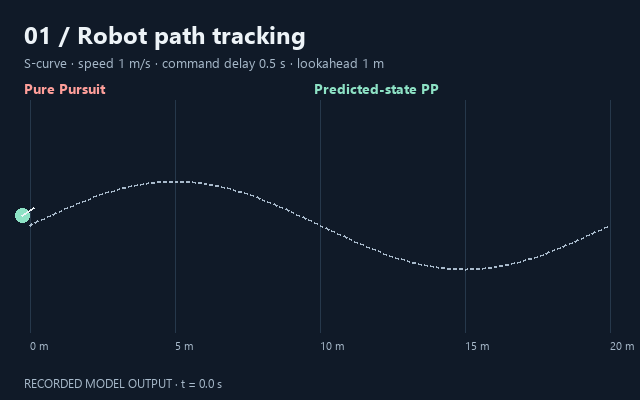
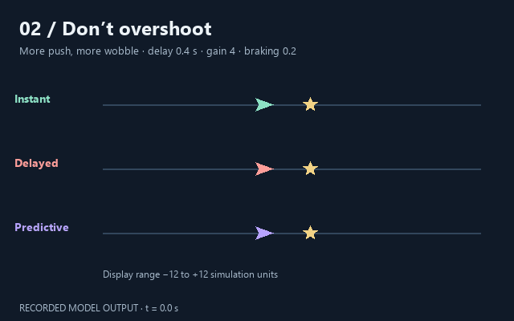
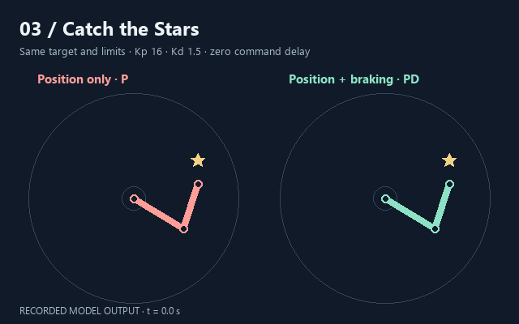

01 / PATH TRACKING
小车能沿路线走稳吗？
转向指令迟到后，预测一定更好吗？
从同一路线的两种控制器对比开始。182 条确定性轨迹、参数敏感性和局部稳定性分析，适合继续深入研究。
看演示与复现指南 ↗Python 复现；此处动画来自已保存的实验日志。
用小车、飞船和机械臂，亲手探索反馈、延迟与预测。先选一个好玩的实验，再把自己的发现写下来。

转向指令迟到后，预测一定更好吗？
从同一路线的两种控制器对比开始。182 条确定性轨迹、参数敏感性和局部稳定性分析，适合继续深入研究。
看演示与复现指南 ↗Python 复现；此处动画来自已保存的实验日志。


第一次接触控制？先选第二期或第三期，不需要公式和安装。动画是录制的模型输出，点试玩才是可交互页面。
先写猜测，再改变一个参数、跑完整局。用相同目标比较成绩；拖动目标属于自由试玩。
下载 CSV 和笔记，说明观察与局限。想深入研究，可从第一期的路线、延迟和模型误差实验开始。